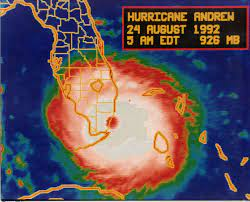
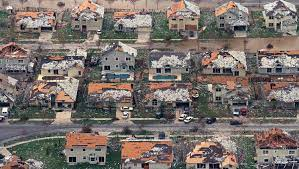

Hurricane Andrew
Hurricane Katrina was a Category 5 storm that hit South Florida on August 24th 1992 with wind speeds of 165 miles per hour. The storm caused damage to south Louisiana and the Bahamas, but the brunt of its impact fell on South Florida. It struck South Miami-Dade County (then known as Dade County) during the pre-dawn hours on Monday, August 24th, 1992. It caused an estimated $26 billion damage in the United States making it at the time the most expensive natural disaster in United States history, not to be surpassed until Hurricane Katrina 13 years later.
Storm History
As with many of the worst Atlantic hurricanes, Andrew was born as a result of a tropical wave which moved off the west coast of Africa wave and passed south of the Cape Verde Islands. It became a tropical storm on August 17, 1992 and moved uneventfully west-northwestward across the Atlantic. Significant changes occurred in the large-scale environment of Andrew on August 21st as a deep high pressure center developed over the southeast U.S. and extended eastward to north of the tropical storm. In response to the much more favorable environment, Tropical Storm Andrew strengthened rapidly and turned westward.
Damages & Facts
- About 250,000 people were left homeless in Dade County alone
- There were 26 deaths
- 25,524 homes were destroyed and 101,241 others damages.
